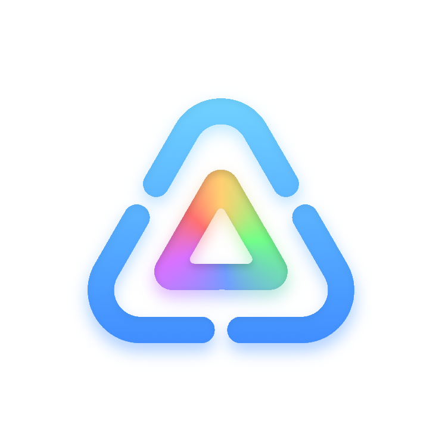

BrocoDev
Multi-Platform Full Stack Developer


Who am I?
I'm a 15 Year Old Programmer & Graphic Designer living in Canada.
I speak English and French.
What Can I Do?
iOS Development
Windows Development
Unity Development
Web Development
and General Development.
What Languages?
Java
Scratch (lmao)
C#
HTML/CSS
Python
JavaScript
Swift/SwiftUI
C++
Sorted Best to Worst
My Projects

arrow_forward_ios